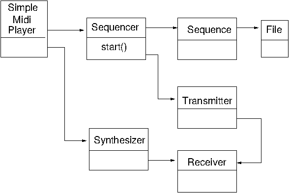

Java Sound has been around since early days of Java. It deals with both sampled and MIDI data. This chapter considers programming using the MIDI API.
There are many resources available for Java Sound:
javax.sound.sampled.
MidiSystem class is the entry point for all
MIDI classes.
MidiDevice includes synthesizers, sequencers,
MIDI input ports, and MIDI output ports
Transmitter sends MidiEvent objects
to a Receiver. A Transmitter is the
source of MIDI events and a Receiver
is a consumer of events.
Sequencer is a device for capturing and playing back sequences of MIDI events.
It has transmitters, because it typically sends the MIDI messages stored in the
sequence to another device, such as a synthesizer or MIDI output port.
It also has receivers, because it can capture MIDI messages and store them in a sequence."
(
Java Sound Programmers Manual: Chapter 8: Overview of the MIDI Package
)
Synthesizer is a device for generating sound.
It's the only object in the javax.sound.midi package that produces audio data"
(
Java Sound Programmers Manual: Chapter 8: Overview of the MIDI Package
)
Device information is found by querying MidiSystem for its
list of DeviceInfo objects. Each information object contains
fields such as Name and Vendor. The actual device may be found using this
information object by MidiSystem.getMidiDevice(info).
The device may then be queried for its receivers and transmitters and
its type as sequencer or synthesizer.
One annoying part is that you
cannot get a list of all the devices's transmitters and receivers, only those
that are open. You can ask for the default transmitter and
receiver which will implicitly open them. So you can see that the list may
be empty before asking for the default, but will be non-empty afterwards
if there is a default! if there are no defaults, a
MidiUnavailableException exception will be thrown.
The program is:
The output on my system is
MIDI devices:
Name: Gervill, Decription: Software MIDI Synthesizer, Vendor: OpenJDK
Device is a synthesizer
Open receivers:
Default receiver: com.sun.media.sound.SoftReceiver@72f2a824
Open receivers now:
com.sun.media.sound.SoftReceiver@72f2a824
Open transmitters:
No default transmitter
Name: Real Time Sequencer, Decription: Software sequencer, Vendor: Oracle Corporation
Device is a sequencer
Open receivers:
Default receiver: com.sun.media.sound.RealTimeSequencer$SequencerReceiver@c23c5ff
Open receivers now:
com.sun.media.sound.RealTimeSequencer$SequencerReceiver@c23c5ff
Open transmitters:
Default transmitter: com.sun.media.sound.RealTimeSequencer$SequencerTransmitter@4e13aa4e
Open transmitters now:
com.sun.media.sound.RealTimeSequencer$SequencerTransmitter@4e13aa4e
Default system sequencer is Real Time Sequencer
Default system synthesizer is Gervill
These two programs from jsresources.org dump a MIDI file to the console.
The MidiSystem creates a Sequence from a file.
Each track of the sequence is looped through and each event within each
track is examined. While it would be possible to print in situ,
each event is passed to a Receiver object which in this case
is DumpReceiver. That object could do anything, but in this case
just prints the event to stdout.
DumpSequence.java is
DmpReceiver.java is
There are several sites with legal free MIDI files. The file Amy Winehouse - Rehab gives the result
---------------------------------------------------------------------------
File: rehab.mid
---------------------------------------------------------------------------
Length: 251475 ticks
Duration: 216788738 microseconds
---------------------------------------------------------------------------
DivisionType: PPQ
Resolution: 480 ticks per beat
---------------------------------------------------------------------------
Track 0:
-----------------------
tick 0: Time Signature: 4/4, MIDI clocks per metronome tick: 24, 1/32 per 24 MIDI clocks: 8
tick 0: Key Signature: C major
tick 0: SMTPE Offset: 32:0:0.0.0
tick 0: Set Tempo: 145.0 bpm
tick 0: End of Track
---------------------------------------------------------------------------
Track 1:
-----------------------
tick 0: Sequence/Track Name: amy winehouse - rehab
tick 0: Instrument Name: GM Device
tick 40: Sysex message: F0 7E 7F 09 01 F7
tick 40: End of Track
---------------------------------------------------------------------------
Track 2:
-----------------------
tick 0: MIDI Channel Prefix: 1
tick 0: Sequence/Track Name: amy winehouse - rehab
tick 0: Instrument Name: GM Device 2
tick 480: [B1 79 00] channel 2: control change 121 value: 0
tick 485: [B1 0A 40] channel 2: control change 10 value: 64
tick 490: [B1 5D 14] channel 2: control change 93 value: 20
tick 495: [B1 5B 00] channel 2: control change 91 value: 0
tick 500: [B1 0B 7F] channel 2: control change 11 value: 127
tick 505: [B1 07 69] channel 2: control change 7 value: 105
tick 510: [E1 00 40] channel 2: pitch wheel change 8192
tick 515: [B1 00 00] channel 2: control change 0 value: 0
tick 520: [C1 22] channel 2: program change 34
...
To play a MIDI file, you create a Sequence from a File,
using the MidiSystem.
You also create a Sequencer from the MidiSystem
and pass it the sequence. The sequencer will output MIDI messages through
its Transmitter. This completes setup of the
MIDI event generation side of
the system.
The play side is constructed by getting a Synthesizer from
the MidiSystem. The Receiver is found from the
synthesizer and is given to the transmitter of MIDI events.
Play commences by calling start() on the sequencer,
which reads from the file and passes MIDI events to its transmitter.
These are passed to the synthesizer's receiver and played. The UML class
diagram for the relevant classes is

This code is from Playing an audio file (easy)
I have an Edirol Studio Canvas SD-20 synthesizer which I bought for a few hundred Australian dollars. This plugs into a PC through a USB port. Alsa recognises this by
$ amidi -l
Dir Device Name
IO hw:2,0,0 SD-20 Part A
IO hw:2,0,1 SD-20 Part B
I hw:2,0,2 SD-20 MIDI
The list of MidiDevice.Info device information
lists hw:2,0,0 twice, once for input
and once for output, and similarly for the other values.
The device information can be identified by the toString
method, which returns values such as "SD20 [hw:2,0,0]".
From the device information the device can be found as before
using MidiSystem.getMidiDevice(info).
The input and output devices can be distinguished by the number
of maxOutputReceivers it supports: zero means none,
while any other value (including minus one!) means it has
a MIDI receiver. Selecting an external receiver is done
by code like
Receiver synthReceiver = null;
MidiDevice.Info[] devices;
devices = MidiSystem.getMidiDeviceInfo();
for (MidiDevice.Info info: devices) {
System.out.println(" Name: " + info.toString() +
", Decription: " +
info.getDescription() +
", Vendor: " +
info.getVendor());
if (info.toString().equals("SD20 [hw:2,0,0]")) {
MidiDevice device = MidiSystem.getMidiDevice(info);
if (device.getMaxReceivers() != 0) {
try {
device.open();
System.out.println(" max receivers: " + device.getMaxReceivers());
receiver = device.getReceiver();
System.out.println("Found a receiver");
break;
} catch(Exception e) {}
}
}
}
Playing an audio file to my SD-20 is done by
The soundbank is a set of "sounds" encoded in some way that
are used to generate the music played. The default sound
synthesizer for Java is the Gervill synthesizer,
and this looks for its default soundbank in
$HOME/.gervill/soundbank-emg.sf2.
This default soundbank is tiny, only 1.9MBytes in size,
and sounds, well, poor quality.
DaWicked1 in Better Java-midi instrument sounds for Linux offers two methods to improve this: the simpler is to replace the soundfont with a better one such as the Fluidsynth font, using the default name.
The second method is programmatic and probably better as it allows more flexibility and choice at runtime.
Changing the speed of playback of a MIDI file means changing
the rate that MIDI messages are sent from the sequencer.
The Java sequencers have methods to control this such as
setTempoFactor. The sequencer will respond to
this method by sending the messages at a different rate.
Changing the pitch of the notes can be done by altering the
pitch of the NOTE_ON and NOTE_OFF
messages. The sequencer does not do this as it is unrelated
to time. The default MIDI Receiver just gets
MIDI messages and passes it onto its Synthesizer.
We can create our own Receiver and interpose
it between the default Transmitter and
Receiver. This can examine MIDI messages
in transit and adjust the pitch of note on/off messages.
We look for input from the user of ←, ↑, →, ↓ (ESC-[A, etc).
These then call the appropriate method. The program illustrating
this is an adaptation of the SimpleMidiPlayer
given earlier in the chapter and is
AdaptableMidiPlayer.java:
The softsynth TiMidity can be run as a backend synthesizer using the Alsa sequencer by
$timidity -iA -B2,8 -Os -EFreverb=0
Opening sequencer port: 128:0 128:1 128:2 128:3
(and similarly for Fluidsynth.). This is opened on ports 128:0 etc.
Unfortunately this is not directly visible to JavaSound which expects either the default Gervill synthesizer or a raw MIDI synthesizer such as a hardware synthesizer. As discussed in the MIDI Alsa chapter, we can fix this by using Alsa raw MIDI ports.
We add raw MIDI ports by
modprobe snd-seq snd-virmidi
This will bring virtual devices both into the ALSA raw MIDI and into the ALSA sequencer spaces:
$amidi -l
Dir Device Name
IO hw:3,0 Virtual Raw MIDI (16 subdevices)
IO hw:3,1 Virtual Raw MIDI (16 subdevices)
IO hw:3,2 Virtual Raw MIDI (16 subdevices)
IO hw:3,3 Virtual Raw MIDI (16 subdevices)
$aplaymidi -l
Port Client name Port name
14:0 Midi Through Midi Through Port-0
28:0 Virtual Raw MIDI 3-0 VirMIDI 3-0
29:0 Virtual Raw MIDI 3-1 VirMIDI 3-1
30:0 Virtual Raw MIDI 3-2 VirMIDI 3-2
31:0 Virtual Raw MIDI 3-3 VirMIDI 3-3
Virtual Raw MIDI port 3-0 can then be connected to TiMidity port 0 by
aconnect 28:0 128:0
The final step in playing to TiMidity is to change one line of AdaptableMidiPlayer.java from
if (info.toString().equals("SD20 [hw:2,0,0]")) {
to
if (info.toString().equals("VirMIDI [hw:3,0,0]")) {
This chapter has built a number of programs using the MIDI API and discussed how to use external hardware synthesizers and soft sythesizers such as TiMidity.